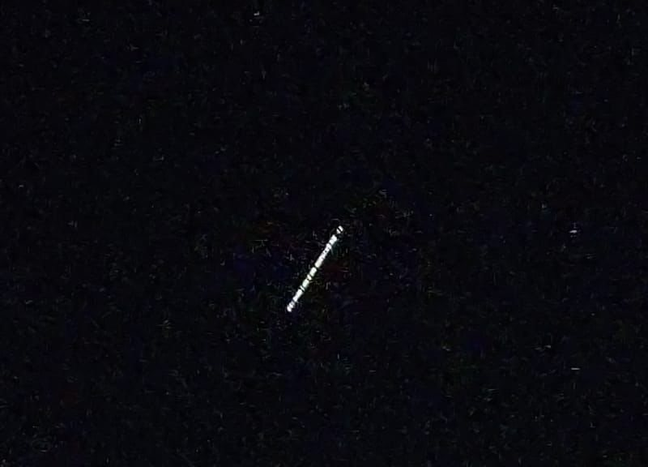
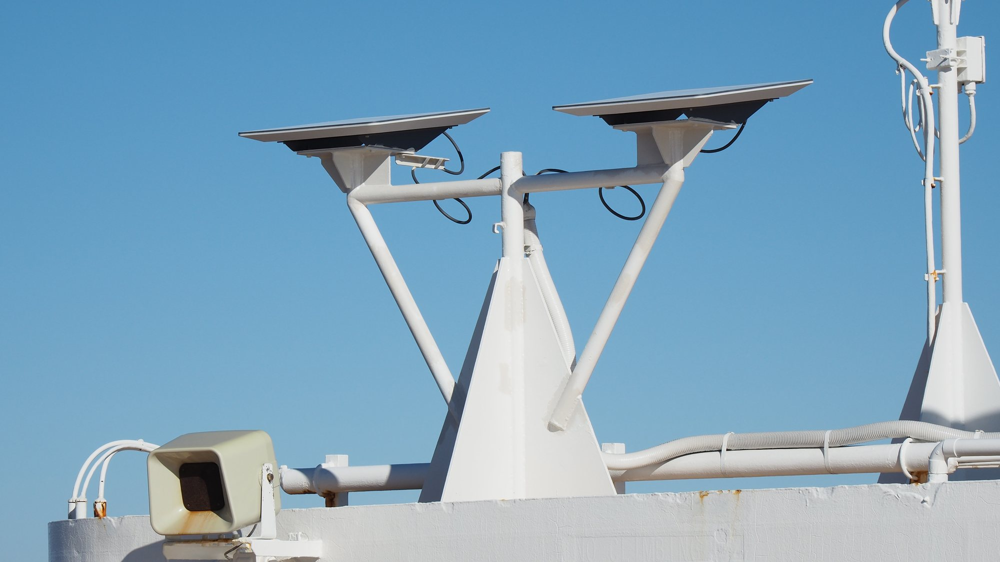

Venerdì 16 ottobre 2026, alle 19:27 ora italiana, l'account ufficiale di Starlink ha pubblicato su X un messaggio breve e insolitamente misurato: «Abbiamo lavorato a stretto contatto con autorità di regolazione, industria e operatori in India per più di cinque anni, e abbiamo costruito nel Paese una rete di sistemi dedicati, gateway e altre infrastrutture per servire esclusivamente il traffico indiano in modo sicuro, il tutto con le necessarie approvazioni del governo. Starlink è pronta a collegare l'India con internet ad alta velocità». Il post citava una dichiarazione diffusa poche ore prima da Reliance Industries, il conglomerato di Mukesh Ambani, e meno di un'ora dopo Elon Musk ha aggiunto due parole rivolte proprio a Reliance: «Much appreciated», molto apprezzato. Dopo dieci giorni di scontro aperto, è il primo segnale di distensione fra l'uomo più ricco del mondo e l'uomo più ricco d'Asia.
Come si è arrivati allo scontro
La miccia si accende mercoledì 7 ottobre, mentre a Nuova Delhi si apre l'India Mobile Congress, la grande fiera delle telecomunicazioni. Sul palco Lauren Dreyer, vicepresidente di SpaceX per le attività commerciali di Starlink, spiega che l'azienda ha già realizzato in India 20 siti gateway con centinaia di antenne, che ha progettato la rete indiana attorno ai requisiti di sicurezza del Paese e che i dati degli utenti indiani resteranno in India. «Siamo pronti a servire l'India, non appena l'India sarà pronta», è la sua frase. Nelle stesse ore Musk scrive su X che Starlink è bloccata da «certi oligarchi» che vogliono mantenere la loro «morsa monopolistica sul popolo indiano», aggiunge «potete indovinare chi sono» e definisce il blocco «un crimine contro il popolo dell'India».
Il giorno dopo il ministero delle Comunicazioni risponde con una nota: tutti e tre i licenziatari sono «sostanzialmente nella stessa fase» e l'idea che le regole siano ingiuste o discriminatorie è «infondata e fuorviante». Musk rilancia: «Starlink ha licenza in oltre 165 Paesi e ha passato cinque anni a rispettare ogni singola legge e requisito del governo indiano, allora perché ancora nessuna licenza? Ambani è il vero capo dell'India?». Venerdì 9 ottobre arriva il post più pungente, una lettera aperta che comincia con «Caro Primo Ministro Ambani» e si scusa ironicamente di «non aver capito» chi comandi davvero nel Paese, chiedendogli di lasciar competere Starlink per portare internet ai villaggi che non ce l'hanno.
Sabato 10 ottobre Musk affronta anche l'obiezione sul prezzo. A chi sostiene che Starlink non potrebbe mai competere con le tariffe bassissime di Jio, risponde che è un'argomentazione contraddittoria e chiude con una promessa: se Starlink fosse troppo cara in India nessuno la comprerebbe, «quindi SpaceX dovrà rendere i prezzi accessibili». Negli Stati Uniti i piani residenziali partono da 55 dollari al mese, una cifra fuori portata per buona parte delle famiglie rurali indiane: il listino per l'India non è ancora stato annunciato.

La risposta di Reliance
Per oltre una settimana Ambani e Reliance non commentano. Alla fiera di Nuova Delhi il figlio Akash Ambani, presidente di Reliance Jio Infocomm, si limita a dire che il gruppo vuole «restare a testa bassa e creare valore per i consumatori indiani». Poi, all'alba di venerdì 16 ottobre ora indiana, Reliance pubblica su X una dichiarazione «per mettere i fatti agli atti», senza mai nominare Musk.
Il testo tiene insieme apertura e fermezza. Reliance ricorda di essere cresciuta in un'India che accoglie investimenti e innovazione, nazionali o stranieri, ma che quell'apertura «si fonda sullo stato di diritto». Poi cita il governo: la procedura è la stessa per ogni richiedente, indiano o straniero, e «anche i servizi satellitari di Jio attendono le autorizzazioni». Infine rivendica la propria storia: Jio è entrata nel 2016 in un mercato affollato «senza un solo cliente» e oggi ne ha più di 530 milioni. La chiusura è la frase che Starlink ha scelto di citare: «Accogliamo con favore la concorrenza nelle comunicazioni satellitari, Starlink compresa. Ogni operatore, Jio incluso, deve servire il popolo indiano e rispettare le leggi e le politiche del Paese».
Il momento non è casuale. Jio Platforms, la società digitale del gruppo, si prepara a quella che sarebbe la più grande offerta pubblica iniziale nella storia dell'India, con una valutazione cercata di circa 108 miliardi di dollari. Una lite pubblica con Musk sulla concorrenza non era il sottofondo ideale.
Che cosa dice davvero il messaggio di Starlink
La replica di Starlink cambia tono rispetto ai post di Musk: niente oligarchi, niente ironia, solo l'elenco di quello che l'azienda ha fatto. Ed è un elenco concreto. Starlink Satellite Communications ha ottenuto dal dipartimento delle Telecomunicazioni la licenza unificata con autorizzazione GMPCS, il servizio di comunicazioni personali via satellite, il 6 giugno 2025. A luglio 2025 IN-SPACe, l'autorità spaziale indiana, ha autorizzato per cinque anni la costellazione di prima generazione. A settembre 2025 l'azienda ha ricevuto spettro provvisorio per le prove e ha avviato i test di sicurezza. Nel frattempo ha costruito le stazioni di terra, con siti previsti fra l'altro a Mumbai, Pune e Indore, e ha firmato nel marzo 2025 accordi di distribuzione proprio con Jio e con Bharti Airtel.
Quando Starlink scrive che tutto è stato fatto «con le necessarie approvazioni», dice il vero per le infrastrutture e le licenze ottenute finora. Ma non dice che manchi solo una formalità. Per vendere abbonamenti servono ancora due passaggi che dipendono dallo Stato.

I due ostacoli che restano
Il primo è il nulla osta di sicurezza. Lo decide il ministero dell'Interno, come ha ricordato il 9 ottobre il ministro delle Comunicazioni Jyotiraditya Scindia: i licenziatari devono dimostrare di rispettare le condizioni tecniche e di sicurezza, che includono l'intercettazione legale, il passaggio del traffico indiano attraverso gateway sul territorio nazionale e la possibilità di sospendere il servizio in caso di emergenza. La prudenza di Nuova Delhi ha anche una storia: nel 2024 le autorità indiane dissero di aver trovato terminali Starlink durante un'indagine sul narcotraffico nelle isole Andamane e Nicobare e in un'operazione dell'esercito in Manipur. Musk rispose allora che il servizio non era mai stato attivo in India.
Il secondo è lo spettro. Scindia ha spiegato che le frequenze saranno assegnate quando il governo avrà fissato il sistema di canoni basato sui ricavi. A settembre 2026 il dipartimento delle Telecomunicazioni ha deciso un'assegnazione amministrativa, senza asta, con un canone d'uso del 5% dei ricavi lordi rettificati: la proposta attende l'ultimo via libera del consiglio dei ministri. È un punto su cui Starlink aveva già vinto: Reliance aveva chiesto a lungo un'asta, che avrebbe favorito i grandi operatori già presenti.
Il quadro è quindi più sfumato di quanto suggerissero i toni di Musk. Starlink, Jio Satellite Communications ed Eutelsat OneWeb, sostenuta dal gruppo Bharti, hanno tutte la licenza e nessuna ha ancora il nulla osta. Sunil Bharti Mittal, presidente di Bharti, ha ricordato che OneWeb aspetta le approvazioni da cinque anni. Amazon, con la sua costellazione, ha chiesto la licenza e non l'ha ancora ottenuta.
Che cosa seguire adesso
La partita vale molto. L'India ha oltre un miliardo di abbonamenti internet, ma la connessione resta diseguale fra città e campagne, e molte zone rurali e remote sono ancora mal servite. Sono i luoghi per cui la banda larga satellitare è pensata: montagne, isole, zone alluvionali, posti dove una torre o una fibra arrivano dopo anni. Musk ha più volte detto che Starlink potrebbe cambiare la vita di quelle comunità, e Dreyer ha promesso connessioni «in pochi minuti, non in anni».
I segnali da tenere d'occhio sono tre: la decisione del ministero dell'Interno sui nulla osta, l'approvazione del canone sullo spettro da parte del governo e, una volta ottenuti entrambi, il prezzo con cui Starlink si presenterà ai clienti indiani. Il «Much appreciated» di venerdì non accelera nessuno di questi passaggi, ma toglie dal tavolo una lite che rischiava di trasformare una pratica amministrativa in un caso politico, proprio mentre l'India corteggia gli investimenti esteri e tratta un accordo commerciale con Washington. Per SpaceX resta valida la frase di Dreyer: Starlink è pronta, ora tocca all'India.
Il dossier sul Roadster con i propulsori SpaceX passa all'archivio Notizie.
Fonti pubbliche e tracce
Ultimo aggiornamento editoriale: 17 ottobre 2026. Nel corpo non si ripete la fonte a ogni frase: le tracce sono raccolte qui. Le citazioni dall'inglese sono traduzioni redazionali.
- Starlink su X, 16 ottobre 2026: «Starlink is ready to connect India with high-speed internet».
- Elon Musk su X, 16 ottobre 2026: «Much appreciated», in risposta a Reliance.
- Reliance Industries su X, 16 ottobre 2026: dichiarazione sulla concorrenza e sulle autorizzazioni di Jio.
- Elon Musk su X, 8 ottobre 2026: «Is Ambani the real boss of India?».
- Elon Musk su X, 9 ottobre 2026: lettera aperta «Dear Prime Minister Ambani».
- Elon Musk su X, 10 ottobre 2026: risposta sulle tariffe, «SpaceX will need to make pricing affordable».
- Reuters via Dawn, 17 ottobre 2026: risposta di Reliance, IPO di Jio Platforms, stato delle licenze.
- Moneycontrol, 17 ottobre 2026: post di Musk e Starlink, dichiarazioni di Sunil Mittal.
- Economic Times, 16 ottobre 2026: testo della dichiarazione Reliance, post di Musk sugli «oligarchi».
- Economic Times, 16 ottobre 2026: risposta di Starlink.
- BBC News, 9 ottobre 2026: cronologia dello scontro, Akash Ambani, accordi con Jio e Airtel, sequestri del 2024, prezzi negli USA.
- Indian Express, 8 ottobre 2026: nota del ministero delle Comunicazioni.
- New Indian Express, 9 ottobre 2026: dichiarazioni di Scindia, ruolo del ministero dell'Interno, richiesta di Amazon.
- Mint, 9 ottobre 2026: canone del 5% sui ricavi in attesa del consiglio dei ministri.
- Business Standard, 8 ottobre 2026: tappe di licenze, IN-SPACe, spettro di prova, gateway di Lauren Dreyer.
- Outlook India, ottobre 2026: data della licenza GMPCS e condizioni di sicurezza.
- Moneycontrol su X, 7 ottobre 2026: intervento di Lauren Dreyer all'India Mobile Congress.
Fotografie utilizzabili
- Copertina e figure: Wikimedia Commons, licenze GODL-India, CC BY-SA 4.0 e CC BY 4.0; dettagli in
assets_starlink_india/crediti_immagini.md. - Nessuna foto SpaceX o X a credito editoriale in questo dossier: la notizia è uno scambio di dichiarazioni, documentato con immagini libere dei protagonisti, dei satelliti Starlink visti dall'India e del terminale utente.